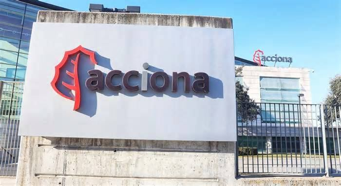

Acciona suministrará electricidad a 24 universidades y centros de investigación de Cataluña y Madrid por 60 millones

Acciona Energía se ha adjudicado un contrato de 60 millones de euros para suministrar electricidad a 24 universidades, centros de investigación y otras instituciones académicas de Cataluña y Madrid du ...
Acciona Energía se ha adjudicado un contrato de 60 millones de euros para suministrar electricidad a 24 universidades, centros de investigación y otras instituciones académicas de Cataluña y Madrid du ...
Noticia publicada por elEconomista.es on MSN. Consulta el artículo original en elEconomista.es on MSN para más información.